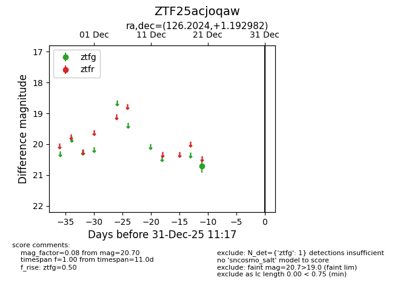
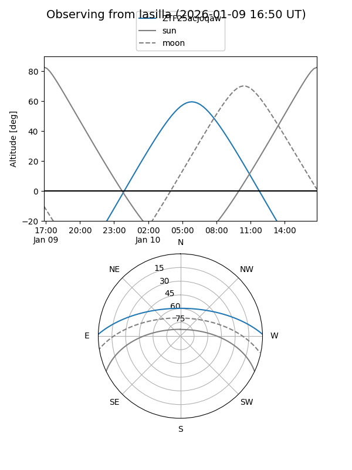
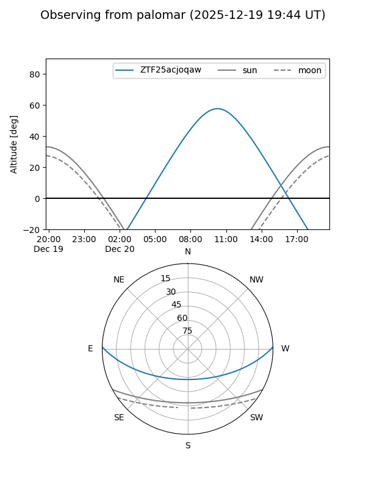

ZTF25acjoqaw
Target ZTF25acjoqaw at 2026-01-09 12:49
Aliases and brokers:
FINK: link
Lasair: link
ALeRCE: link
alt names
ZTF25acjoqaw (ztf,fink_ztf)
Coordinates:
equatorial (ra, dec) = 126.2024,+1.19298
equatorial (HMS+DMS) = 08:24:48.59,+01:11:34.74
galactic (l, b) = (222.9470,+21.22681)
Flags:
Photometry:
last ztfg=20.70
1 ztfg detections
Lightcurve

Visibility


Additional plots